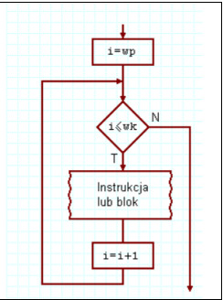
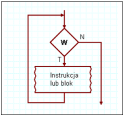
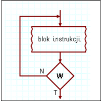

| Pytania teoretyczne | Odpowiedzi |
| 1.Pętla for |
a. konstrukcja for (zainicjowanie_zmiennej; warunek_kończący_wykonywanie_pętli; zmiana_zmiennej) { kod który zostanie wykonany pewną ilość razy } b. opis Charakteryzuje się ona tym że z góry wiemy ile razy się wykona. c. Schemat blokowy  |
| 2.Pętla while |
a. konstrukcja while (wyrażenie_sprawdzające_zakończenie_pętli) { ...fragment kodu który będzie powtarzany... } b. opis pętla while najpierw sprawdza warunek, potem coś wykonuje, pętla może się nie wykonać. c. Schemat blokowy  |
| 3.Pętla do while |
a. konstrukcja Do { ...fragment kodu który będzie powtarzany... } while (false) } b. opis pętla do...while zawsze wykona jedną iterację, zanim sprawdzi warunek. Zawsze więc wykona jakieś zadanie c. Schemat blokowy  |